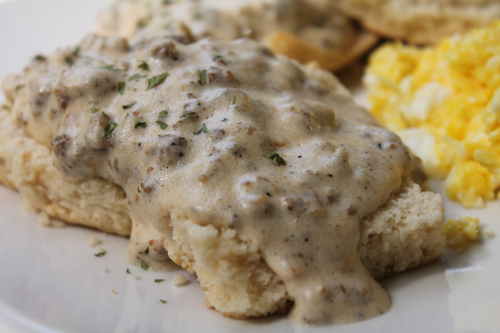

Homemade Biscuits and Gravy

Soft, flaky biscuits topped with savory, white sausage gravy.
Ingredients:
- Refrigerated Biscuits
- Pork Sausage
- All-purpose Flour
- Milk
- Seasonings
How to make:
- Prepare the biscuits.
- Cook the sausage.
- Add the flour, then stir in the milk and bring to a boil.
- Reduce to a simmer and continue cooking for two minutes.
- Season to taste.